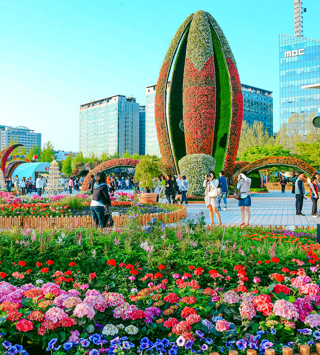
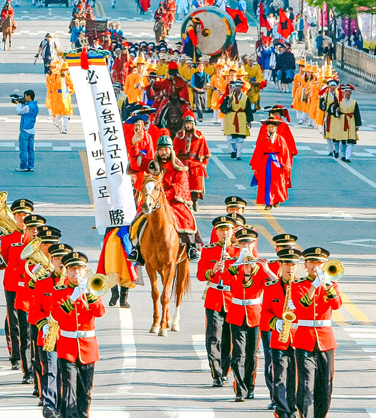

고양국제꽃박람회
- 일시 : 매년 4~5월
- 장소 : 일산호수공원
고양국제꽃박람회는 ‘꽃의 도시’ 고양특례시에서 매년 4~5월 개최되는 국내 대표이자 최대 규모 꽃박람회다. 매년 새로운 주제로 진행되는 축제에 국내외 우수 화훼업체가 참가해 다양한 주제의 전시와 최신 화훼 트렌드를 선보이고, 화훼산업 비즈니스 교류도 활발하게 펼쳐진다.
박람회 내내 일산호수공원은 온통 꽃으로 물들고, 이를 즐기려는 수많은 인파가 몰린다. 이밖에도 매년 9~10월 일산호수공원 일원에서 고양가을꽃축제도 진행된다. 가을을 만끽할 수 있는 꽃과 프로그램이 준비돼 국제꽃박람회만큼 높은 인기를 얻고 있다.

고양행주문화제
- 일시 : 매년 5월
- 장소 : 행주산성, 행주산성 역사공원
고양행주문화제는 임진왜란 3대 대첩의 하나인 행주대첩의 얼을 계승하고 승전을 기념하는 고양특례시 대표 역사문화축제다. 1993년부터 하나의 독립된 문화제로 진행되기 시작했으며, 현재는 매년 5월에 정기적으로 진행되고 있다. 축제는 주로 행주산성과 역사공원에서 진행되며, 행주대첩의 역사성을 부각하는 프로그램이 다수 마련 돼있다.
고유제, 위령굿 등의 전통의례 프로그램을 비롯해 전통행렬, 투석전, 수상 불꽃놀이, 공연 등도 진행된다. 최근에는 콘텐츠 확대에도 노력하고 있는데, 뮤지컬 행주대첩과 모바일 행주대첩 게임 등을 선보이기도 했다.